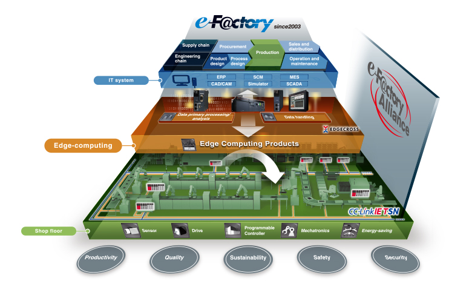

Core CompetenciesProviding Integrated Solutions

As a comprehensive manufacturer of FA solutions, Mitsubishi Electric FA provides one-stop solutions for optimizing production
e-F@ctory creates "Smart Factories" through IoT-based big data utilization.
e-F@ctory: An Integrated FA Solution for Improving
Productivity through Optimization
Our e-F@ctory concept utilizes cutting-edge control and networking technologies to “visualize” information and coordinate with high-level manufacturing execution systems to improve production. This allows production facilities to increase uptime, shorten lead times, improve quality, cut costs and otherwise optimize operations. The e-F@ctory reduces total cost of ownership (TCO) by cutting total costs in development, production and maintenance, and optimizes operations by integrating advanced technologies. It also improves production floor coordination with its iQ platform-compatible engineering environment, controllers, HMIs and networks.
